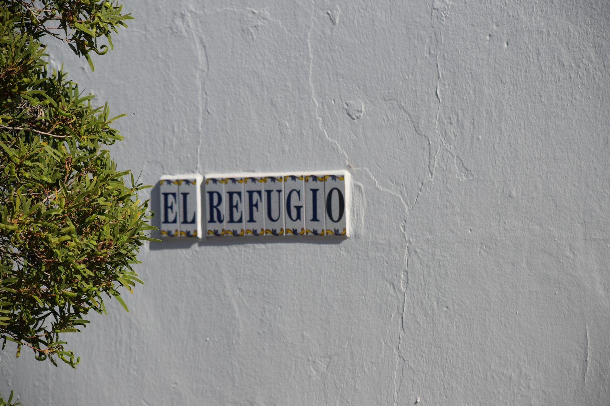
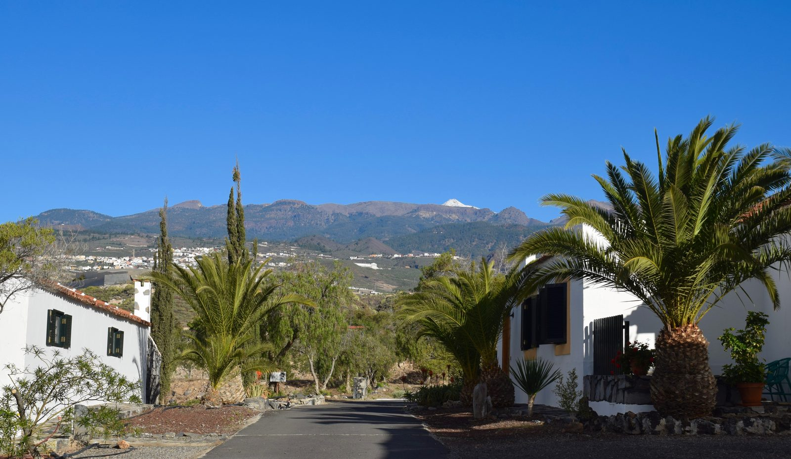
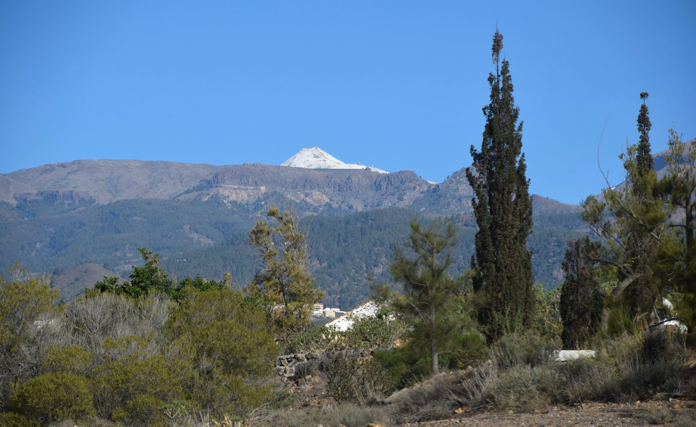
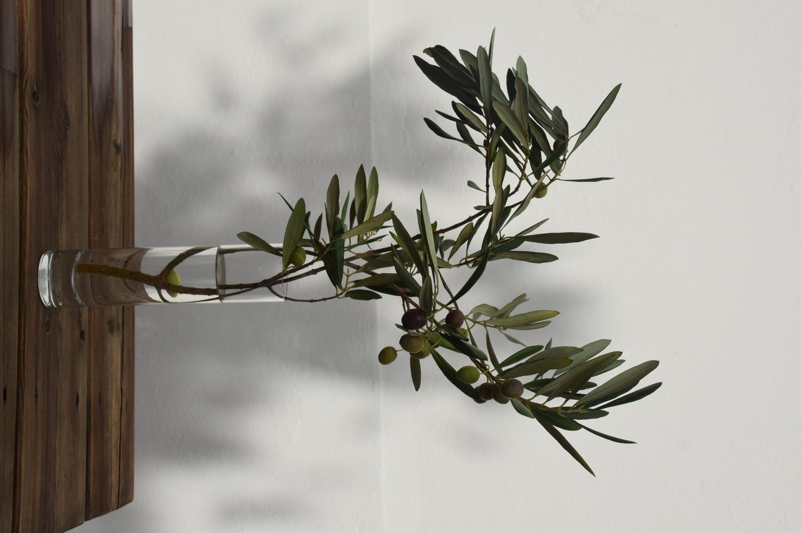
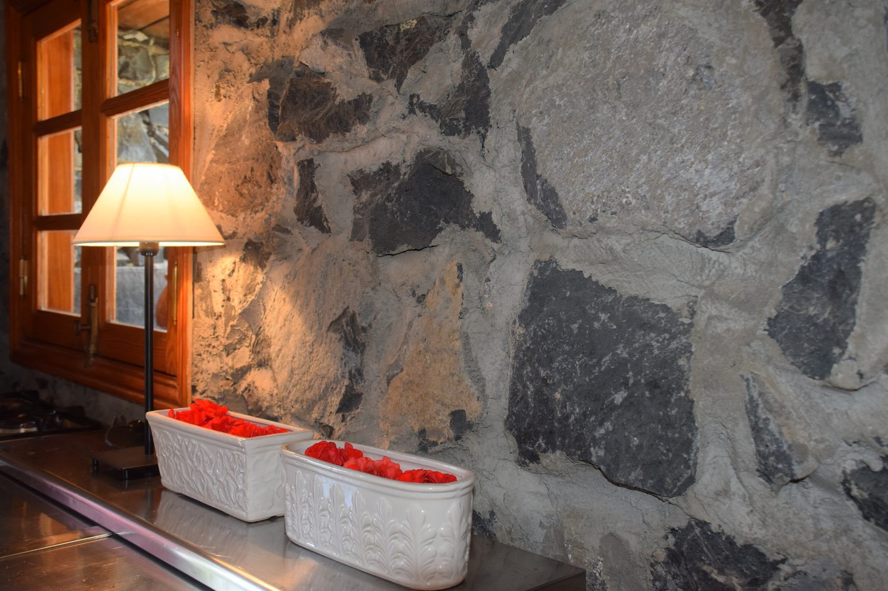
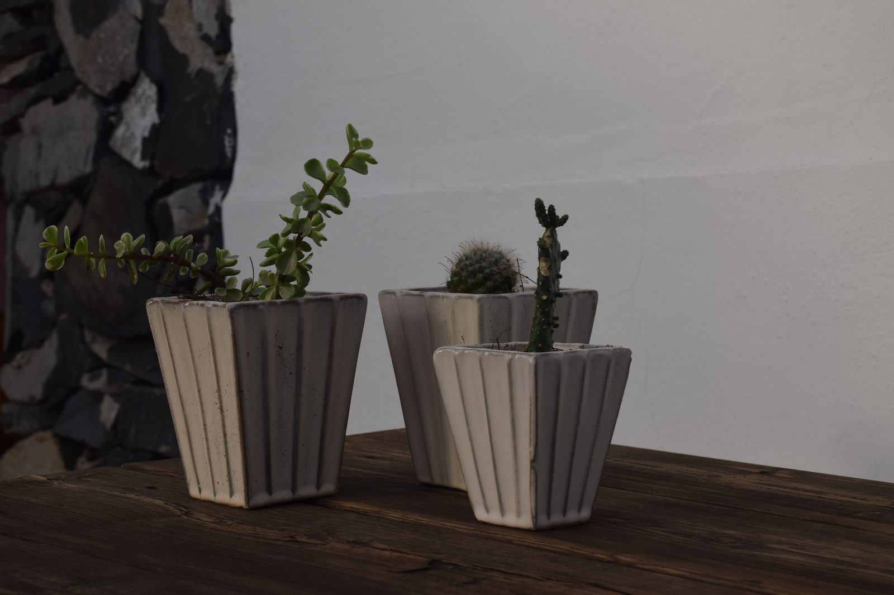
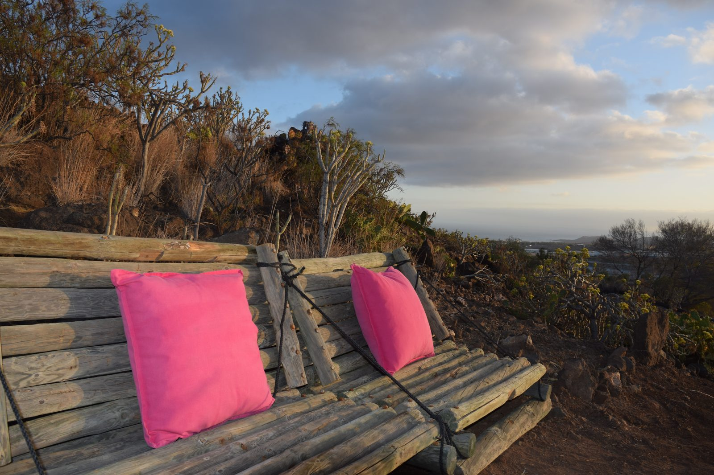

Nel cuore di Playa de Las Americas, questa iconica scuola di surf è il punto di riferimento ideale per vivere il surf a Tenerife in modo autentico, sicuro e divertente. Le lezioni sono pensate per tutti i livelli.
Dal primo contatto con l'acqua fino al perfezionamento delle manovre avanzate, il team di Lo Squalo accompagna ogni allievo con un metodo progressivo, chiaro e su misura. L'obiettivo non è solo imparare a surfare: è sentire una connessione vera con l'oceano.
Massimo 6 allievi per istruttore. Attenzione personalizzata garantita in ogni sessione, con un monitoraggio reale dei progressi individuali.
Team certificato e multilingue (ES, IT, EN, DE), con anni di esperienza sulle onde di Tenerife e formazione in salvataggio in acqua.
Tavole in foam e shortboard, muta, leash e assicurazione inclusi in tutte le lezioni. Non devi portare nulla.
Percorso strutturato in fasi: teoria sulla sabbia, esercizi di equilibrio, prime onde e perfezionamento. Sicuro, chiaro ed efficace.
Impari dove il surf lo vivono i local. Una scuola con un'anima, non un'attrazione turistica. La cultura del surf si respira in ogni sessione.
Fino a 6 persone. L'opzione più popolare. Impari insieme agli altri, ti motivi e vivi il surf in community.
Massima attenzione, progressi rapidi. Ideale per chi vuole risultati in poco tempo o ha esigenze specifiche.
Da 2 a 3 persone. L'equilibrio perfetto tra prezzo e attenzione. Ideale per coppie o amici.
Pacchetti da 5 o 10 sessioni a prezzo dedicato. Per chi vuole prendere il surf sul serio.
Tavole, mute e accessori disponibili per i surfisti autonomi. A ore o per l'intera giornata.
Che sia la tua prima volta in acqua o che tu voglia fare il salto di livello, la Surf School di Lo Squalo è il posto dove inizia la tua storia con il surf a Tenerife. Durata media della sessione: circa 2 ore.
Contattaci per prenotare la tua lezione
💬 Contattaci su WhatsApp